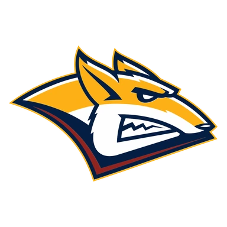

Нефтехимик — Динамо Минск итог матча 17 ноября
Статистика матча
- 30Броски в створ38
- 1 из 1Голы в большинстве0 из 3
- 2Штрафные минуты6
- 1Удаления3
- 28Выигранные вбрасывания29
- 51 %Владение шайбой49 %
- 95Входы в зону атаки91
Удаления по минутам 4
- 2-й период
- Чухраев Арсений №37Задержка соперника клюшкой2 мин
- Пастухов Илья №55Блокировка2 мин
- 3-й период
- Смит Тай №24Подножка2 мин
- Энэс Сэм №7Подножка2 мин
Данные лиги.
- ТурнирКХЛ
Коротко о матче
Нефтехимик — Динамо Минск 1:2: гости победили по буллитам.
По форме команды были близки: в пяти последних матчах у обеих по 2 победы. Слабое место — оборона: Нефтехимик — в среднем 4,4 пропущенной шайбы за игру в этих пяти матчах.
Стоит учесть и площадку: дома Нефтехимик — 4 победы в 10 матчах, на выезде Динамо Минск — 3 победы в 10. До этого команды встречались 17 октября 2025 года: Динамо Минск — Нефтехимик 3:4 в овертайме.
Отдых и дорога
У хозяев 2 дня отдыха, у гостей 1 день отдыха.
 Нефтехимикхозяева
Нефтехимикхозяева
- 2дня отдыха
- 3матча за 7 днейвключая этот
- 4-йдомашний матч подряд
- 0км перелётпрошлый матч — на этой же арене
Прошлый матч: 14.11, Нефтехимик — Авангард 1:5
 Динамо Минскгости
Динамо Минскгости
- 1день отдыха
- 4матча за 7 днейвключая этот
- 3-йвыездной матч подряд
- 500км перелётбез смены часового пояса
Прошлый матч: 15.11, Торпедо — Динамо Минск 1:0
Перелёт — по прямой между городами прошлого и этого матча. Время отдыха считаем от начала прошлого матча.
Форма: последние матчи
Нефтехимик 2 победы из 5
 В2:1
В2:1
П1:8 П1:5
П1:5 В4:3
В4:3 П1:5
П1:5
Динамо Минск 2 победы из 5
 П3:5
П3:5- П2:3
- В4:0
 В4:1
В4:1 П0:1
П0:1
Кто в форме
Больше всего очков (голы + передачи) в последних матчах команды.
Нефтехимикза 5 последних матчей
| Игрок | Г | П | О |
|---|---|---|---|
| Митякин Евгений | 2 | 1 | 3 |
| Белозёров Андрей Ал. | 1 | 2 | 3 |
| Тянулин Артур | 1 | 2 | 3 |
| Точилкин Герман | 2 | 0 | 2 |
| Заседа Матвей | 1 | 0 | 1 |
Динамо Минскза 5 последних матчей
| Игрок | Г | П | О |
|---|---|---|---|
| Тирни Кристофер | 0 | 4 | 4 |
| Брук Джошуа | 1 | 2 | 3 |
| Липский Даниил А. | 1 | 2 | 3 |
| Уэлле Ксавье | 1 | 2 | 3 |
| Обе-Кюбель Николя | 2 | 0 | 2 |
Дома и в гостях
Хозяева — в своих домашних матчах, гости — в выездных. Регулярный чемпионат этого сезона.
| Матчей | 14 | 12 |
|---|---|---|
| Побед | 7 из 14 | 3 из 12 |
| Забивают за игру | 3,0 | 2,1 |
| Пропускают за игру | 2,9 | 2,9 |
| Тотал больше 5,5 | 57% | 33% |
| Доходили до овертайма | 36% | 42% |
Жирным — лучшее из двух. Овертайм — с буллитами.
Вратари
Цифры за сезон. Кто выйдет в старте, клубы обычно объявляют только перед игрой.
Нефтехимик
| Вратарь | И | Отражено | Пропуск. | На ноль |
|---|---|---|---|---|
| Долганов Филипп №53 | 16 | 91,7% | 2,87 | 2 |
| Озолин Ярослав №31 | 14 | 92,7% | 2,52 | 0 |
Динамо Минск
| Вратарь | И | Отражено | Пропуск. | На ноль |
|---|---|---|---|---|
| Фукале Зак №60 | 20 | 91,3% | 2,23 | 1 |
| Демченко Василий №94 | 9 | 91,2% | 2,58 | 0 |
| Прохоров Евгений Д. №31 | 2 | 90,7% | 2,65 | 0 |
Отражено — доля отражённых бросков. Пропуск. — пропущено шайб в среднем за игру.
Личные встречи
- Динамо Минск3:4ОТНефтехимик
- Нефтехимик4:3Динамо Минск
- Нефтехимик1:5Динамо Минск
- Динамо Минск4:1Нефтехимик
Положение в таблице
| Команда | Место | И | В | П | Голы | Очки |
|---|---|---|---|---|---|---|
| 4 | 28 | 14 | 14 | 73:78 | 32 | |
| 8 | 28 | 11 | 17 | 66:77 | 29 |
Куда дальше
Материалы носят информационный характер и не гарантируют результат. Реклама букмекеров на сайте не размещается. Сайт только для совершеннолетних (18+).